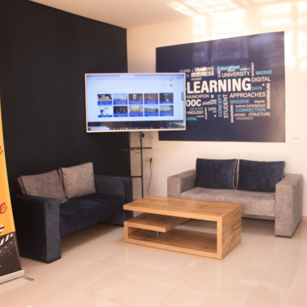
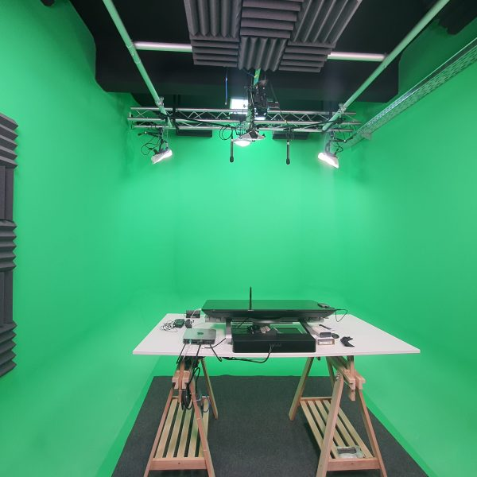
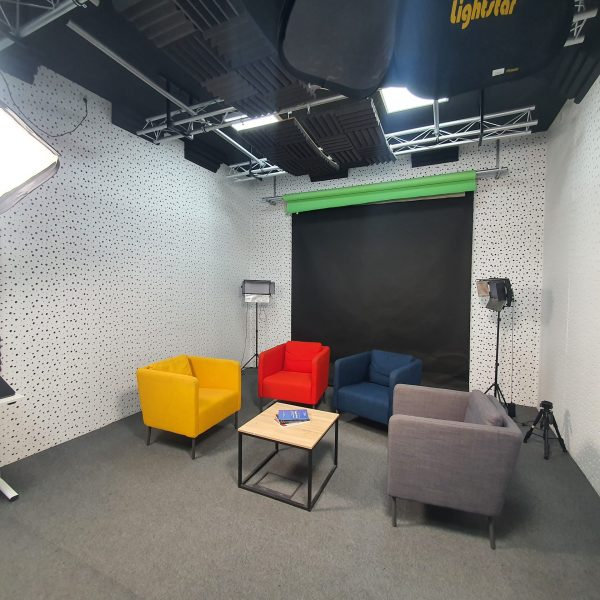
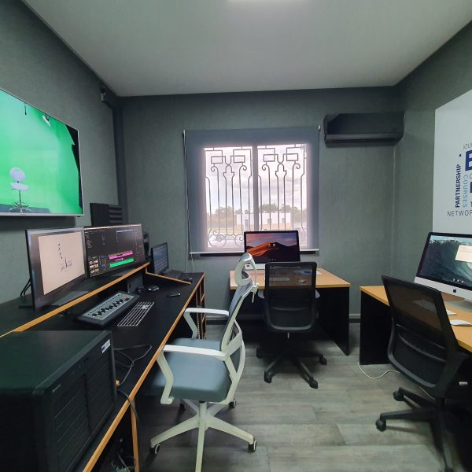
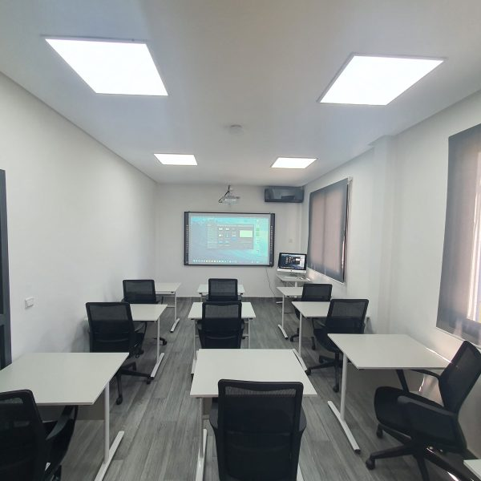
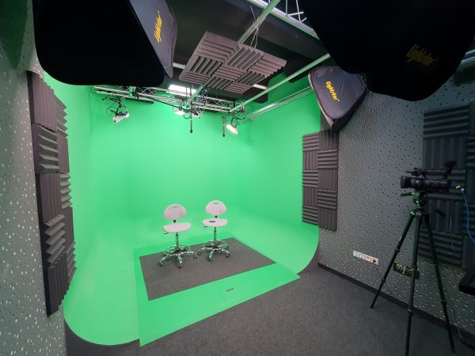

Un espace dédié à la création, à la formation et à l'innovation numérique au sein de l'UIT Kénitra
Découvrir nos espacesLe Centre d'Innovation Pédagogique et Numérique (CIPN) de l'Université Ibn Tofail de Kénitra est un espace moderne dédié à la production de contenus pédagogiques numériques, à la formation des enseignants aux nouvelles technologies éducatives et à l'accompagnement des projets d'innovation pédagogique.
Équipé de studios professionnels, de salles de formation et d'espaces collaboratifs, le CIPN met à disposition de la communauté universitaire des ressources et des compétences pour enrichir l'expérience d'apprentissage.
Nous contacter
Des infrastructures modernes au service de la pédagogie numérique

Studio de tournage professionnel équipé d'un fond vert, d'un système d'éclairage studio et d'un matériel de captation vidéo de haute qualité.

Plateau de tournage avec décors modulables, éclairage professionnel et équipements audio pour la réalisation de vidéos pédagogiques et de webinaires.

Salle de post-production équipée de stations de montage vidéo et audio professionnelles, permettant l'édition et la finalisation des contenus numériques.

Salle équipée d'un tableau numérique interactif, d'un vidéoprojecteur et de postes de travail pour accueillir des formations aux outils numériques éducatifs.
Le CIPN accompagne les enseignants et les étudiants dans leurs projets numériques
Tournage et montage de capsules vidéo pédagogiques, MOOCs, tutoriels et contenus multimédias.
Ateliers de formation aux outils numériques : plateformes LMS, création de contenus interactifs, e-learning.
Accompagnement et conseil pour la transformation digitale des pratiques pédagogiques.
Enregistrement et production de contenus audio : podcasts, cours audio, interviews pédagogiques.
Organisation et diffusion en direct de conférences, webinaires et événements académiques.
Mise à disposition de ressources pédagogiques numériques et d'une médiathèque en ligne.
Quelques aperçus de nos installations

Université Ibn Tofail, Campus Universitaire, Kénitra, Maroc
cipn@uit.ac.ma
+212 5 37 32 94 00